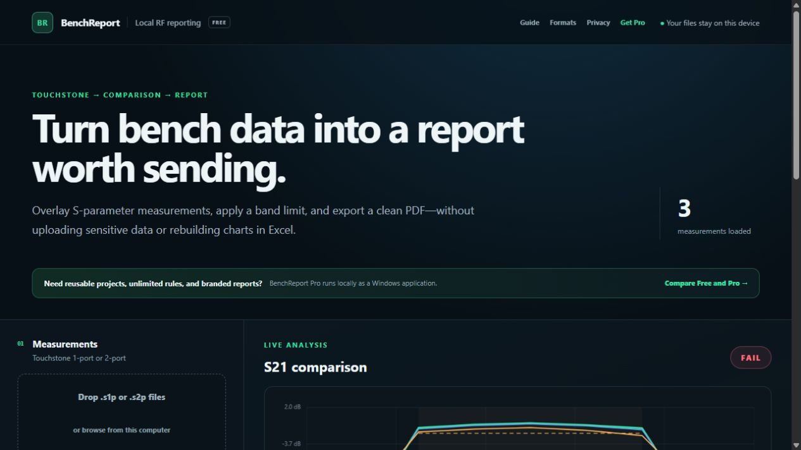

Bench engineers
Compare units quickly and identify the exact frequency behind a failed limit.
BenchReport Pro · Windows
BenchReport Pro packages the complete local-first workflow as a Windows application. Measurements remain on the computer while reusable projects, acceptance templates, unlimited rules, and branded reports remove repetitive documentation work.
Pay once and receive the Windows installer immediately through Gumroad. No subscription.

Compare units quickly and identify the exact frequency behind a failed limit.
Apply the same named acceptance rules to every measurement in a project.
Create a consistent report without maintaining another spreadsheet or script.
Open local S1P or S2P files and select the traces that matter.
Run reusable frequency-bounded limits across every measurement.
Add project context and export a branded, reviewable PDF.
| Capability | Free browser viewer | Pro Windows application |
|---|---|---|
| Local Touchstone processing | Yes | Yes |
| Measurements per analysis | 3 | Unlimited |
| Acceptance rules | 1 | Unlimited |
| Worst value and frequency | Yes | Yes |
| RF trace statistics | Yes | Yes |
| Golden/reference trace | Yes | Yes |
| Reusable rule templates | — | Yes |
Portable .brp projects | — | Yes |
| Company logo and metadata | — | Yes |
| Branded multi-rule PDF report | — | Yes |
| Offline Windows installer | — | Yes |
The Windows application starts a private local service bound to 127.0.0.1. It does not expose the service to the network or upload measurement contents. Project files can contain complete measurement data and remain the user's responsibility.
BenchReport-Pro-0.4.0-Setup.exe · 95.1 MB
SHA-256BF47ADFB5369149F72965E9CB2424CE20888D733F7261D4CE0CEB6640FE179C7
The current installer is not code-signed, so Windows SmartScreen may show an “unrecognised app” warning. This is disclosed before purchase; it does not mean the installer bypasses Windows security. See the current release notes and verification instructions.
Read the support, licence, refund and update policy. The free browser edition uses the same core Touchstone parser and can be evaluated before purchase.
No. Parsing, analysis and report generation run locally. The desktop application binds its local service to 127.0.0.1.
Yes. The free browser edition uses the same core parser and includes synthetic measurements for a complete trial workflow.
No. The launch licence is a one-time £29 purchase for one user and includes BenchReport Pro 0.x maintenance updates.
S1P and S2P files using common Touchstone 1.0-style DB/angle, magnitude/angle or real/imaginary data. Review the format and limitation list before purchase.
The early installer is not yet signed with a commercial certificate. Windows SmartScreen may therefore describe it as unrecognised. The exact SHA-256 checksum is published above and on the support page.
BenchReport is analysis and documentation software, not a calibrated instrument or approved test process. Results require competent engineering review.
Get the Windows installer immediately and keep the complete workflow on your computer.
Buy BenchReport Pro — £29One-time one-user licence · no subscription · 30-day money-back guarantee